★Graphic Tools Guide
★SpriteEditorユーザーズマニュアル
★Graphic Tools Guide
★SpriteEditorユーザーズマニュアル
▲
戻る｜
進む▼
SpriteEditorユーザーズマニュアル
2.メニューについて
●ファイルメニュー
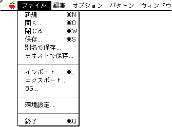
- 新規（
 +N）
+N）
新規の登録領域を確保します。
- 開く...（+O）
本ツールで保存されたファイルを開きます。
- 閉じる（+W）
編集中のカレントウィンドウを閉じます。
- 保存...（+S）
編集中のデータを保存します。
- 別名で保存...
編集中のデータを別名で保存します。
- インポート...
スプライト登録用のグラフィックデータファイルを読み込みます。
特殊機能として、SegaPainterでアニメーション設定を施されたファイルを読み込んだ場合、オートインポート確認ダイアログが表示されます。
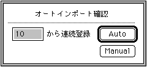
ここで登録開始位置を指定して「Auto」を選択することにより、ファイル中のオブジェクト領域に従ってスプライトを自動登録します。
- エクスポート...
既に登録されているスプライトを個別にDGT2形式で保存します。
- BG...
背景表示用のイメージデータを読み込みます。
- 環境設定...
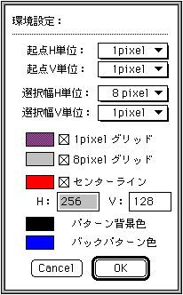
- 起点H単位、起点V単位
スプライトデータをカットする選択範囲の起点位置を指定されたpixel単位に補正します。
- 選択幅H単位、選択幅V単位
スプライトデータをカットする選択範囲の起点位置からの領域の幅を指定されたpixel単位で補正します。
- 1pixelグリッド、8pixelグリッド
オプションメニューの「グリッド表示」選択時に表示される各単位のグリッドについて設定します。
- センターライン
パターン編集ウィンドウの原点位置表示用のラインについて設定します。
- パターン背景色
パターン編集ウィンドウの背景色を指定します。
- バックパターン色
オプションメニューの「バックパターン」選択時に表示される１つ前パターンのシルエットに使用される色を指定します。
- 終了...（+Q）
『SpriteEditor』を終了させます。
●編集メニュー
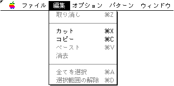
- 取消（+Z）
- カット（+X）
- コピー（+C）
- ペースト（+V）
- 消去
- 全てを選択（+A）
- 選択範囲の解除（+D）
●オプションメニュー
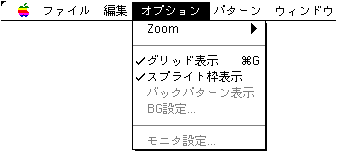
- Zoom（+1,+2,+4,+8）
インポート、パターン編集ウィンドウに対して表示倍率を設定します
- グリッド表示（+G）
インポート、パターン編集ウィンドウに対してグリッド表示の有無を設定します。
- スプライト枠表示
インポート、パターン編集ウィンドウに対してスプライト枠表示の有無を設定します。
- バックパターン表示
パターン編集ウィンドウに対して、直前パターン表示の有無を選択します。
- BG設定
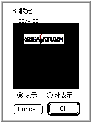
あらかじめ読み込まれている背景イメージについての設定を行います。
パターン編集ウィンドウに対して背景イメージの表示の有無及び表示位置を指定します。
- モニタ設定
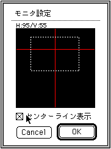
ターゲット側に出力される表示イメージについての設定を行います。
パターン編集ウィンドウ上においてのモニタ表示位置の指定及びモニタへのセンターラインの表示有無を指定します。
●パターンメニュー
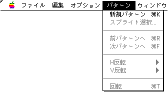
- 新規パターン追加（+K）
新規にパターンの登録領域を追加します。
- スプライト選択...
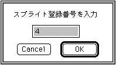
パターン中の指定したスプライトを選択状態にします。
- 前パターンへ（+F）
編集対象となるパターンを１つ前へ移動させます。
- 次パターンへ（+R）
編集対象となるパターンを１つ先へ移動させます。
- H反転
- 原点を基準に
パターン編集ウィンドウで選択されているスプライトに対してパターン原点を基準に左右反転を行います。
- スプライト毎に
パターン編集ウィンドウで選択されているスプライトに対してその配置座標を維持したまま左右反転を行います。
- V反転
- 原点を基準に
パターン編集ウィンドウで選択されているスプライトに対してパターン原点を基準に上下反転を行います。
- スプライト毎に
パターン編集ウィンドウで選択されているスプライトに対してその配置座標を維持したまま上下反転を行います。
- 回転（+T）
パターン編集ウィンドウで選択されているスプライトに対して回転角度の加減値を指定します。
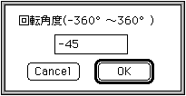
●ウィンドウメニュー
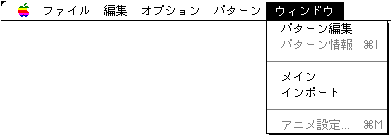
- パターン編集
パターン編集ウィンドウを開きます。
- パターン情報（+I）
パターン情報ウィンドウを開きます。
- メイン
メインウィンドウをカレントにします。
- インポート
インポートウィンドウをカレントにします。
- アニメ設定（+M）
アニメ設定ウィンドウを開きます。
▲
戻る｜
進む▼
★Graphic Tools Guide
★SpriteEditorユーザーズマニュアル
Copyright SEGA ENTERPRISES, LTD,. 1997